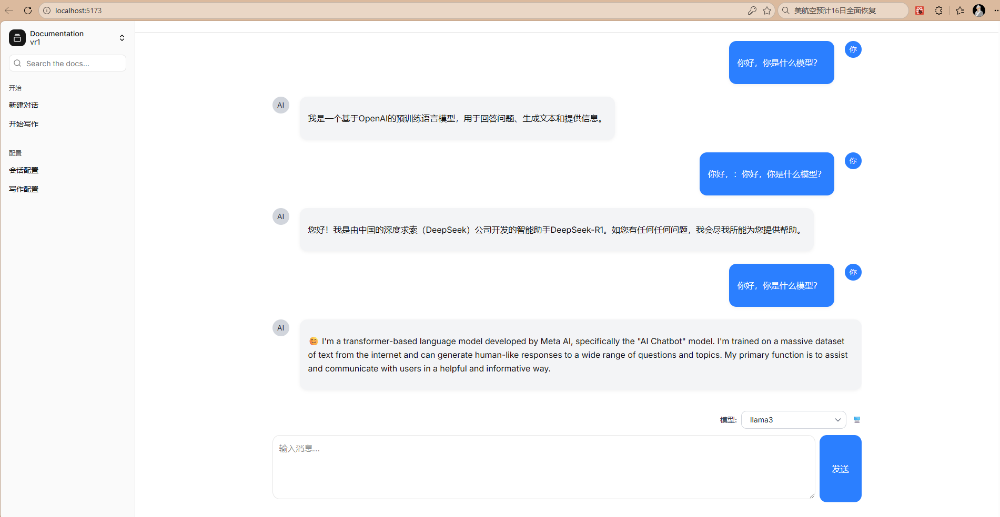

多模型自由切换
本地 Ollama、豆包、千问统一接入，按场景随时切换，不被单一厂商绑定。
一个面向企事业内部的 AI 对话工作台。多模型自由切换、流式输出、知识库问答（RAG），从对话到私有知识，一套系统全部搞定。
简洁的侧边栏会话管理，清晰的多轮对话，支持 Markdown、代码高亮与模型实时切换。

不只是聊天框，而是一套可直接落地的内部 AI 基础设施。
本地 Ollama、豆包、千问统一接入，按场景随时切换，不被单一厂商绑定。
逐字返回，首屏响应更快。Markdown、代码高亮、数学公式原生渲染。
上传文档自动解析、分块与向量化，基于私有资料进行检索增强回答。
JWT 登录，聊天记忆与会话列表按用户隔离，接口权限统一管控。
Spring Boot 4 + Spring AI 2 + Java 25，前端 React 19 + Vite 7 + TypeScript。
数据留在自己的服务器，敏感资料不出内网，满足企业内部合规要求。
git clone https://gitee.com/wu6789/my-seek.gitcd my-seek && ./gradlew bootRuncd my-seek-web && pnpm install && pnpm dev需要本地可用的 MariaDB、Redis 与 Ollama。详细配置见后端 README。
开源、可定制、可私有化部署。
前往 Gitee 获取源码 ->